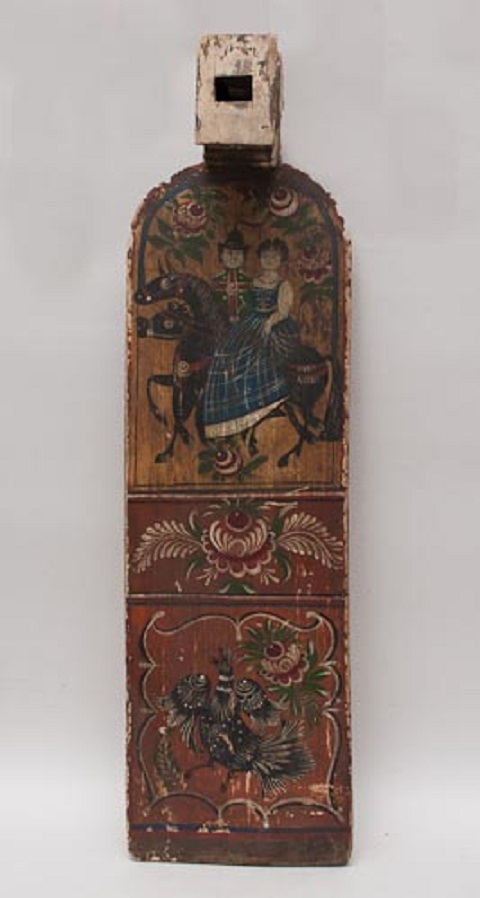

Прасніца

Пра́сніца — драўляная прылада для мацавання кудзелі ў час прадзення воўны, льна, пянькі. Вядомы чатыры асноўныя тыпы: лапатападобная, прасніца-грэбень, прасніца-вілы, прасніца-кій. На Беларусі найбольш пашыраны лапатападобная і прасніца-грэбень (Прыпяцкае Палессе). Сустракаліся таксама веслападобныя (Лідскі раён), мечападобныя (Брэсцкая вобласць), прасніца-дошчачка, якая мацавалася да калаўрота, і інш. Прасніцу аздаблялі рознымі відамі разьбы — фігурнай апрацоўкай ножак, выпілоўкай краёў лопасці, ступеньчатымі выпіламі на днішчы ў месцы злучэння з лопасцю і інш. Арнаментальныя матывы геаметрычныя, раслінныя, салярныя, зааморфныя і складаныя. Асаблівым багаццем і разнастайнасцю разнога дэкору вызначаюцца прасніцы з Брэсцкай вобласці.